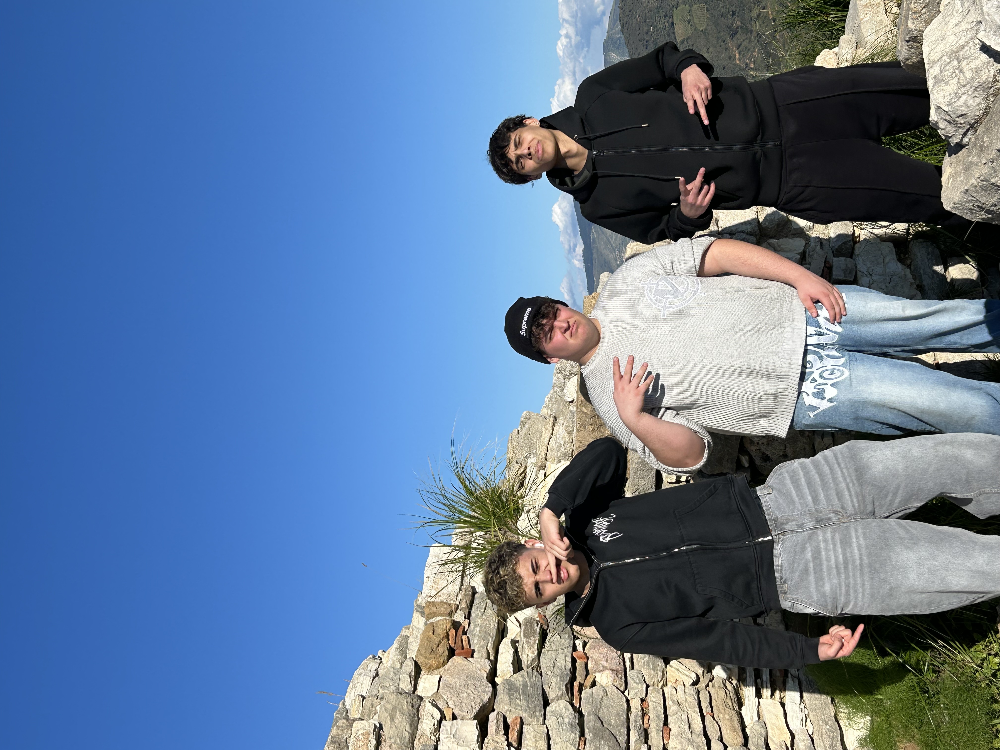

Siamo un gruppo di studenti di quarta Digital Science dell'ITT Buonarroti di Trento. Il nostro gruppo è costituito da Alessandro Mulchande, Giordano Dorigoni ed Elia Giarratana. Noi crediamo che nel big 25 bisogna cantastoriare e come cantastoriare se non facendo un podcast! Questa nostra iniziativa ci ha aiutati ad espandere i confini della nostra conoscienza durante l'affronto di tematiche da noi mai incontrate.
